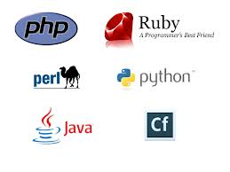
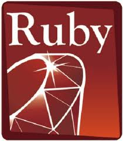
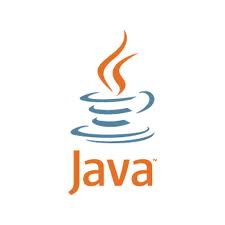

Programming Languages And Concepts
Static and Dynamic Typing
vs
STRONG TYPING AND WEAK TYPING
Static Typing
Static typed programming languages are those in which variables need not be defined before they’re used.
/************************************ C code ************************************/
int num, sum; // explicit declaration
num = 5; // now use the variables
sum = 10;
sum = sum + num;
Dynamic Typing
Dynamic typed programming languages are those languages in which variables must necessarily be defined before they are used.
//************************************ ruby code ***********************************/
num = 10 // directly using the variable
Strong Typing
Programming languages in which variables have specific data types are strong typed.
/************************************ ruby code ************************************/
>>foo = "x"
>>foo = foo + 2
TypeError: can't convert Fixnum into String
from (irb):7:in `+'
from (irb):7
/* ruby code */
>>foo = "x"
>>foo = foo + "y"
>>puts foo
>>xy
Weak Typing
As opposed to strong typed languages, weak typed languages are those in which variables are not of a specific data type.
/*********************************** PHP code ***********************************/
O/P => 2
Conclusion ....
- Ruby is dynamic typed and strong typed
- Java is static typed and strong typed
- PHP is dynamic typed and weak typed
- C is static typed and weak typed
Application Server vs Web Server
Both terms are very generic, one containing the other one and vice versa in some cases.
Web server:
serves content to the web using http protocol.
Application server:
hosts and exposes business logic and processes.
Open source programs and contributions
The source code is included with the compiled version and modification or customization is actually encouraged. The software developers who support the open source concept believe that by allowing anyone who's interested to modify the source code, the application will be more useful and error-free over the long term.
To be considered as open source software by the software development industry, certain criteria must be met:
- The program must be freely distributed.
- Source code must be included.
- Anyone must be allowed to modify the source code.
- Modified versions can be redistributed.
- The license must not require the exclusion of other software or interfere with the operation of other software
Introduction For Languages
 RUBY
Ruby is an interpreted scripting language that is used for easy, quick and scalable object-oriented programming.
Philosophy of Ruby:-
Matsumoto has said that Ruby is designed for programmer productivity and fun, following the principles of good user interface design. He stresses that systems design needs to emphasize human, rather than computer, needs.”
RUBY
Ability to make operating system calls directly.
Powerful string operations and regular expressions.
Quick and Easy
Variable declarations are unnecessary.
Variables are not typed.
Syntax is simple and consistent.
Memory management is automatic.
RUBY
Defining and undefining the methods
def name (parameters)
body // the last value is the returned value
end
To remove a method;
undef name
To add an instance method to an existing class, first “open” the class
class String
def nchars
length
end
end
RUBY
Class and object methods
#To add a class method while inside the Person class:
def self.species
‘human’
end
#To add a class method from elsewhere:
def Person.species
‘human’
end
#To add a method to an individual object:
def oscar.mood
‘grouchy’
end
RUBY
Declaring methods
class MyClass
def square
#public method accessible by all classes
return true
end
private
def foo
#its a private method accessible in this class only
end
protected
def add
#protected method accessible by child classes
return true
end
end
RUBY
Instantiating objects
Suppose you want to instantiate an object of YourClass in MyClass
class MyClass
end
myClass= MyClass.new
RUBY Conventions
Initial characters- Local variables, method parameters, and method names -> lowercase letter or underscore
- Global variable -> $
- Instance variable -> @
- Class variable -> @@
- Class names, module names -> uppercase letter
- Instance variables -> separate words with underscores
- Class names -> use MixedCase
End characters
- ? -> Indicates method that returns true or false to a query
- ! -> Indicates method that modifies the object in place rather than returning a copy
 PHP
PHP
- PHP stands for PHP: Hypertext Preprocessor.
- PHP is a widely-used, open source scripting language
- PHP is an HTML-embedded scripting language.Much of its syntax is borrowed from C, Java and Perl.
- The goal of the language is to allow web developers to write dynamically generated pages quickly
- PHP runs on different platforms
- PHP is compatible with almost all servers used today (Apache, IIS, etc.)
- PHP has support for a wide range of databases.
- PHP is easy to learn and runs efficiently on the server side
PHP
Defining the methods
function functionName()
{
code to be executed;
}
To add more functionality to a function, we can add parameters. A parameter is just like a variable. Parameters are specified after the function name, inside the parentheses.
function functionName(@a, @b)
{
code to be executed;
}
PHP
Defining class
class User
{
public $name;
public $age;
public function describe()
{
return $this->name . " is " . $this->age . " years old";
}
}
PHP
Instantiating objects
Suppose you want to instantiate an object of YourClass in MyClass
class User
{
public $name;
public $age;
public function describe()
{
return $this->name . " is " . $this->age . " years old";
}
}
$user = new User();
JAVA
Java is: platform independent programming language similar to C++ in syntax similar to Smalltalk in mental paradigm.
JAVA
Features of Java
- 1.Platform Independant (Write once Run Anywhere)
- Supports Multithreading
- Object Oriented.
- Highly Secure
- Combination of Compiler and Interpreter used to excute the programs
JAVA
Syntax to write a class
public class MyClass {
//your memeber variables
//your methods
public static void main(String args[]){
//main code.
}
JAVA
Declaring member variables
public class MyClass{
String myString; //default scope
private Long myLong; //private access specifier
protected Integer myInteger; //protected access specifier
public Double myDouble;//public access specifier
}
JAVA
Declaring methods
public class MyClass{
String myString; //default scope
private Long myLong; //private access specifier
protected Integer myInteger; //protected access specifier
public Double myDouble;//public access specifier
private void foo(){
//its a private method accessible in this class only
}
protected Long add(){
//protected method accessible by child classes returning a long
return myLong;
}
public Double square(){
//public method accessible by al;l classes returning a long
return myDouble
}
}
JAVA
Instantiating objects
Suppose you want to instantiate an object of YourClass in MyClass
package com.mycompany.myproject.mypackage
public class MyClass
{
YourClass yourClass= new YourClass();
}
JAVA Conventions
- Class names should always be in word case
eg:MyClass,YourClass - Objects of those classes should be in camel case eg:myClass
- the package names should always be in lower case eg:
com.mycompany.myproject.mypackage